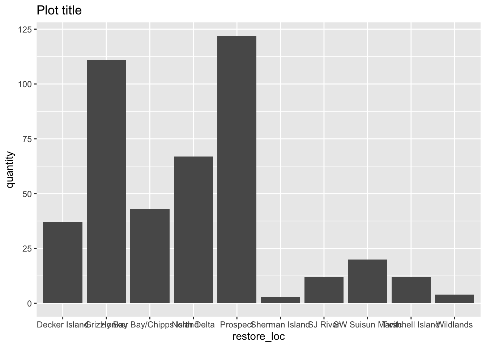
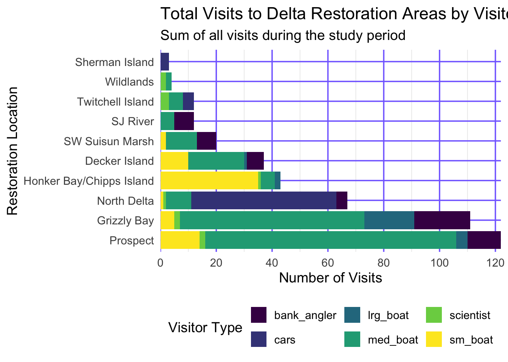

### Data wrangling
library(readr)
library(here) ### for robust relative file paths
library(dplyr)
library(tidyr)
library(forcats) ### tools for working with factors (e.g., reordering)
library(janitor) ### clean column names
library(DT)
library(leaflet)
### Visualization
library(ggplot2)
### Interactive output
library(plotly)
# read in data from the data directory after manually downloading data
delta_visits_raw <- read_csv(here("data/Socioecological_monitoring_data.csv"))
daily_visits_loc <- delta_visits_raw %>%
janitor::clean_names() %>%
tidyr::pivot_longer(
cols = c(sm_boat, med_boat, lrg_boat, bank_angler, scientist, cars),
names_to = "visitor_type",
values_to = "quantity"
) %>%
dplyr::rename(restore_loc = eco_restore_approximate_location) %>%
dplyr::select(-notes) %>%
dplyr::group_by(restore_loc, date, visitor_type) %>%
dplyr::summarize(daily_visits = sum(quantity), .groups = "drop")Data Visualization
Interactive Table
DT::datatable(
daily_visits_loc,
caption = "Daily visitor counts at Delta restoration sites",
colnames = c("Location", "Date", "Visitor type", "Daily visits"),
options = list(pageLength = 10)
)Explore the data
### Check out column names
colnames(delta_visits_raw) [1] "EcoRestore_approximate_location" "Reach"
[3] "Latitude" "Longitude"
[5] "Date" "Time_of_Day"
[7] "sm_boat" "med_boat"
[9] "lrg_boat" "bank_angler"
[11] "scientist" "cars"
[13] "notes" ### Peek at each column and class
glimpse(delta_visits_raw)Rows: 55
Columns: 13
$ EcoRestore_approximate_location <chr> "Decker Island", "Decker Island", "Dec…
$ Reach <chr> "Brannan to Decker Island", "Decker Is…
$ Latitude <dbl> 38.10587, 38.10587, 38.08456, 38.08456…
$ Longitude <dbl> -121.7064, -121.7064, -121.7204, -121.…
$ Date <date> 2017-07-07, 2017-07-07, 2017-07-07, 2…
$ Time_of_Day <chr> "unknown", "unknown", "unknown", "unkn…
$ sm_boat <dbl> 0, 0, 0, 0, 2, 0, 0, 7, 1, 0, 0, 0, 0,…
$ med_boat <dbl> 2, 4, 0, 1, 10, 0, 0, 1, 2, 0, 1, 6, 1…
$ lrg_boat <dbl> 0, 0, 0, 0, 1, 0, 0, 0, 0, 0, 0, 0, 0,…
$ bank_angler <dbl> 1, 3, 0, 0, 0, 0, 0, 0, 2, 0, 0, 5, 0,…
$ scientist <dbl> 0, 0, 0, 0, 0, 0, 0, 0, 0, 0, 0, 0, 0,…
$ cars <dbl> 0, 0, 0, 0, 0, 0, 0, 0, 0, 0, 0, 0, 0,…
$ notes <chr> "no notes", "no notes", "Nobody or tra…### From when to when
range(delta_visits_raw$Date)[1] "2017-07-07" "2018-03-13"### Which time of day?
unique(delta_visits_raw$Time_of_Day)[1] "unknown" "morning"Reshape the data
visits_long <- delta_visits_raw %>%
tidyr::pivot_longer(
cols = c(sm_boat, med_boat, lrg_boat, bank_angler, scientist, cars),
names_to = "visitor_type",
values_to = "quantity"
) %>%
### shorten the long name:
dplyr::rename(restore_loc = EcoRestore_approximate_location) %>%
### drop the notes column:
dplyr::select(-notes)
glimpse(visits_long)Rows: 330
Columns: 8
$ restore_loc <chr> "Decker Island", "Decker Island", "Decker Island", "Decke…
$ Reach <chr> "Brannan to Decker Island", "Brannan to Decker Island", "…
$ Latitude <dbl> 38.10587, 38.10587, 38.10587, 38.10587, 38.10587, 38.1058…
$ Longitude <dbl> -121.7064, -121.7064, -121.7064, -121.7064, -121.7064, -1…
$ Date <date> 2017-07-07, 2017-07-07, 2017-07-07, 2017-07-07, 2017-07-…
$ Time_of_Day <chr> "unknown", "unknown", "unknown", "unknown", "unknown", "u…
$ visitor_type <chr> "sm_boat", "med_boat", "lrg_boat", "bank_angler", "scient…
$ quantity <dbl> 0, 2, 0, 1, 0, 0, 0, 4, 0, 3, 0, 0, 0, 0, 0, 0, 0, 0, 0, …Plot the data
ggplot(data = visits_long,
mapping = aes(x = restore_loc, y = quantity)) +
geom_col() +
labs(title = 'Plot title')
Updated visuals
my_theme <- function(base_size = 14) {
theme_minimal(base_size = base_size) +
theme(legend.position = "bottom",
panel.grid.major = element_line(color = 'slateblue1'))
}
daily_visits_totals <- visits_long %>%
group_by(restore_loc) %>%
mutate(total = sum(quantity)) %>%
ungroup() %>%
mutate(restore_loc = fct_reorder(restore_loc, desc(total)))
unique(daily_visits_totals$restore_loc) [1] Decker Island SW Suisun Marsh Grizzly Bay
[4] Prospect SJ River Wildlands
[7] North Delta Honker Bay/Chipps Island Twitchell Island
[10] Sherman Island
10 Levels: Prospect Grizzly Bay North Delta ... Sherman Islandggplot(data = daily_visits_totals,
aes(y = restore_loc, x = quantity, fill = visitor_type)) +
geom_col() +
scale_fill_viridis_d() +
scale_x_continuous(breaks = seq(0, 120, 20), expand = c(0, 0)) +
labs(
x = "Number of Visits",
y = "Restoration Location",
fill = "Visitor Type",
title = "Total Visits to Delta Restoration Areas by Visitor Type",
subtitle = "Sum of all visits during the study period"
) +
my_theme()
facet_plot <- ggplot(data = daily_visits_totals,
aes(x = visitor_type, y = quantity,
fill = visitor_type)) +
geom_col() +
facet_wrap(~restore_loc,
scales = "free_y",
ncol = 5,
nrow = 2) +
scale_fill_viridis_d() +
labs(x = "Type of visitor",
y = "Number of Visits",
title = "Total Number of Visits to Delta Restoration Areas",
subtitle = "Sum of all visits during study period") +
theme_bw() +
theme(legend.position = "bottom",
axis.ticks.x = element_blank(),
axis.text.x = element_blank())
facet_plot
Play with plotly
ggplotly(facet_plot, tooltip = c('x', 'y'))Show an interactive map
## Interactive Map
restoration_sites <- delta_visits_raw %>%
janitor::clean_names() %>%
distinct(restore_loc = eco_restore_approximate_location,
latitude, longitude) %>%
drop_na(latitude, longitude)
leaflet(restoration_sites) %>%
addTiles() %>%
addMarkers(
lng = ~longitude,
lat = ~latitude,
popup = ~restore_loc
)